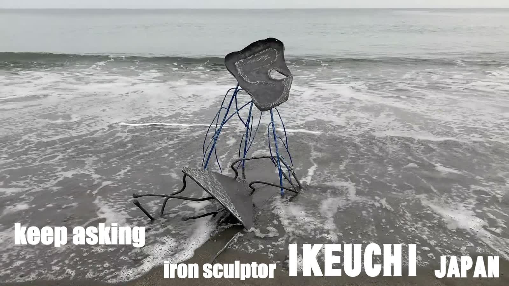
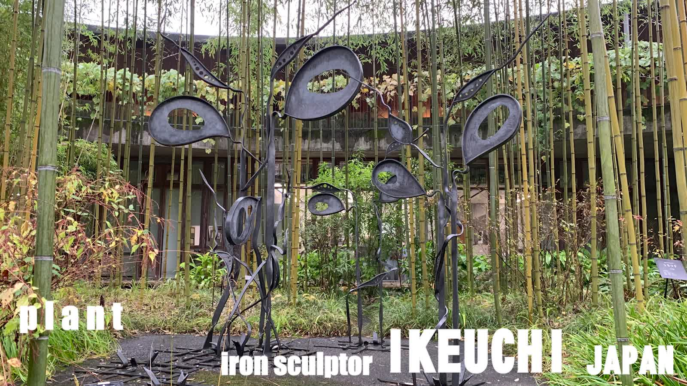

Realized
RealizedSomething to Protect
「守るべきもの」A woven iron egg guarded by a single perched bird.
A direct placement program for residential lobbies, private members' clubs, hospitality groups, and estates — hand-forged by Japanese sculptor Ikeuchi, previsualized on your site before it is built.
The Sculptor
Ikeuchi trained as a welder in his family's ironworks on Shikoku before turning to sculpture in his late forties. Since 2009 his work has been collected and awarded across Japan's most serious exhibitions, and every piece is still hand-forged in his own workshop in Kochi.
This program packages that craft for organizations that need to place a single, defensible object — vetted, insurable, and proven able to stand outdoors for years — rather than commission original art from scratch.
Reference Installations
Each commission is previsualized in a cinematic render of its future site before fabrication begins. The following three have since been forged, delivered, and installed.


The Collection
Realized works ship as replicas built to your site. Bespoke concepts are previsualized and ready to be scaled to your specification.
RealizedA woven iron egg guarded by a single perched bird.
A weathered mask on wire limbs, built for the tideline.
Iron stems grown to stand among real bamboo.
A folded flame of hammered steel for a double-height space.
A cracked, weathered egg opened onto a warm interior.
A wire-legged vessel cradling a hammered leaf.
Works in Iron
Photographs of finished works as they were exhibited and installed. Select any image to view it full size.
A wide rusted-iron bloom holding a single stone, carried on one wandering stem — with a pierced iron butterfly settling at its edge.
Hundreds of lengths of rebar twisted into a single trunk, opening into a crown above and roots below — wrapped in a band of orange steel.
Coloured steel blades rising from a black steel core beside the museum's stone marker, reading clearly against the surrounding forest.
Functional Iron
The same hand-forged iron, made to be used every day. Each piece is built to order and can be sized and coloured for your space.
A natural log trunk sprouting coloured steel leaves that double as hooks. At home in a nursery entrance or a design-office reception.
A long, gently curving bench of cedar slats on many slender iron legs — a creature resting in the garden, with an iron head to match.
A slim cedar-clad store on a steel frame, with a forged iron flower in the window and a red lever handle.
Images marked “Placement image” show how a piece could look in a setting; they are not records of a delivered installation.
Placement Program
Process
We review your site — light, sightlines, scale, and what it should say.
The piece is placed in a cinematic render of its future setting for sign-off.
Hand-built in Ikeuchi's Kochi workshop, to your approved scale and finish.
Shipped, installed, and weather-tested, with an ongoing maintenance plan.
Recognition
Request a Proposal
Send the property, the space, and the number of sites under consideration. We respond with a previsualization concept and indicative scope before any commitment is required.